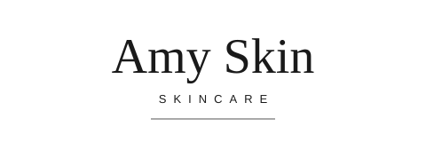
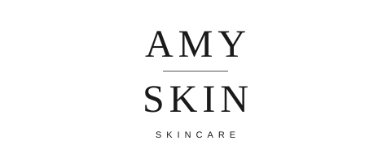

Amy Skin — 3 New Minimalist Directions
A completely different direction from A / B / C — those three were rejected, their files (logo-a.svg, logo-b.svg, logo-c.svg) have been deleted from the repo and are not used anywhere on this page. These three are wordmark only: no petal, no leaf, no arch, no droplet, no decorative motif of any kind. Big-brand luxury by restraint, like Chanel / La Mer / Dior wordmarks — simple, lots of white space, fine lettering, neutral and versatile.
How to choose: reply D, E or F (or mix, e.g. “D wordmark + E tracking”). The same logo must fit every product — serum, cream, mask, cleanser, body / hair care; bottles, tubes, boxes, pouches — small on a bottle and large on a box, in one colour and in reverse. That is what the product rows below test. After your choice we build the full VI and apply it to the site. The full website is not urgent and is not being built yet.
Shared neutral palette — all three directions
wordmarkCharcoal #333333
secondary textWarm Grey #8A8378
fine rulesIvory #FAF8F5
backgroundWhite #FFFFFF
background
One colour only: black on light, white in reverse on dark. No brand colour is needed — the product, its formula and its packaging carry the colour; the logo stays neutral.
D — Serif Wordmark · Classic
“ Amy Skin ” in a refined high-contrast serif, with “SKINCARE” in small letterspaced capitals and a single hairline. The most classic of the three — closest to a heritage luxury wordmark.

Font: Georgia serif (wordmark) + Arial, letterspaced (sub-line). Clear space: one cap-height “A” on all sides. Minimum size: 20 mm print / 100 px digital.
One colour & reverse:
On six product types
E — Sans Caps · Wide Tracking
“AMY SKIN” in light sans-serif capitals with wide tracking, “SKINCARE” small below, single hairline. The cleanest and most modern of the three — closest to La Mer / Dior clean-sans wordmarks.
Font: Arial / Helvetica light, wide tracking (wordmark + sub-line). Clear space: one cap-height “A” on all sides. Minimum size: 20 mm print / 100 px digital.
One colour & reverse: 
On six product types
F — Stacked Wordmark · Centred
“AMY” over “SKIN”, centred, in serif capitals with a hairline between, “SKINCARE” small below. The most compact of the three — it reads best on narrow packs (tubes, pouches) and on square jar lids, and it is the most distinctive at small size.

Font: Georgia serif capitals, letterspaced (wordmark) + Arial, letterspaced (sub-line). Clear space: one cap-height “A” on all sides. Minimum size: 20 mm print / 100 px digital.
One colour & reverse:
On six product types
Next step: choose D, E or F. Then we build the full VI from that direction only — colours, fonts, clear-space & minimum size, bottle label mockup, box mockup and the website colour scheme — and apply it to the site. Contact: WhatsApp +86 189 2882 3858 · info@amyskinoem.com